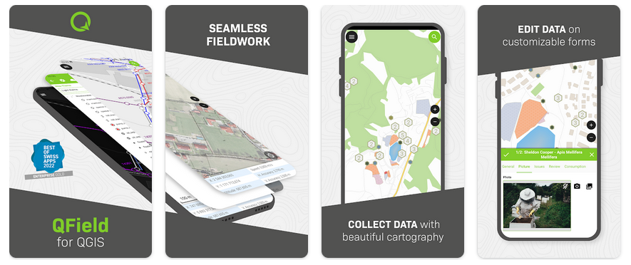

Q-fält¶
Mobilt GIS¶
qField for QGIS <https://qfield.org>`_ är ett förenklat och pekoptimerat gränssnitt för QGIS i fält. Det innehåller professionella verktyg för datainsamling med integrering av positioneringsenheter för mätning samt stöd för ett stort antal avancerade funktioner för attributinhämtning och mobil kartläggning. QField finns tillgängligt för Android, iOS, Linux, MacOS och Windows.
Det är perfekt integrerat med QGIS och utvecklingen av de två projekten sker i nära samarbete.


Kärnfunktioner¶
- Användarvänligt grafiskt användargränssnitt:
identifiera/välja funktioner
redigera/visa/söka attribut
reprojektion i farten
vacker kartografi
foto- och multimediainspelning
direkt återkoppling om datakvalitet via begränsningar
- Enkel visning av många vektor- och rasterformat
de flesta vektorformat: inklusive ESRI shapefiler, MapInfo, SDTS och GML, OpenStreetMap-vektorer
rasterformat såsom digitala höjdmodeller, flygfotografier eller landsat-bilder
webbtjänster online: WMS, WFS och OGC API
- Exportera data
utskrift till pdf
- Integration av sensorer
interna positioneringssensorer (GNSS)
externa positioneringssensorer via NMEA (Bluetooth, UDP, TPC)
NTRIP-korrektion (RTK) kan aktiveras beroende på enhet
integrering av externa sensorer (strålning, gas, …)
- Synkronisering
Datasynkronisering via QFieldCloud <https://qfield.cloud>
Implementerade standarder¶
Överensstämmer med OGC-standarder (WMS, WFS, … )
Detaljer¶
Webbplats: https://qfield.org/
Licence: GNU General Public License (GPL) version 2
Programvaruversion: 2.7.6
Plattformar som stöds: Windows, Linux, Mac, Unix, iOS, Android
Support till samhället: https://docs.qfield.org/get-started/support/
Kommersiellt stöd: https://docs.qfield.org/get-started/support/
Observera
This project is only included on the OSGeoLive virtual machine disk (VMDK)